A visual record of the survey, engineering, steel, and construction work behind the projects — from field georeferencing in Nicaragua to structural erection in the United States.
Surveying & Georeferencing
Topographic, cadastral, and GNSS field work · Nicaragua
GNSS georeferencing — establishing control points
Field georeferencing on an open lot
As-built survey of an existing structure
Total station survey at a fabrication yard
Setting out — marking foundation lines
Field access & mobilization
Steel & Construction
Fabrication, erection, and geotechnical work · Nicaragua
Industrial warehouse — steel frame erection
Heavy steel columns in fabrication
Steel ceiling framing — interior remodel
Geotechnical soil boring
Design, 3D & Institutional
Site analysis, modeling, and documentation
Site analysis — contours, sun paths & views
3D modeling & photoreal rendering
Reviewing site plans on a hospital project
Institutional campus survey
Architecture & Visualization
Concept renders and interiors — modeled and rendered in-house
Cultural center — timber gridshell canopy
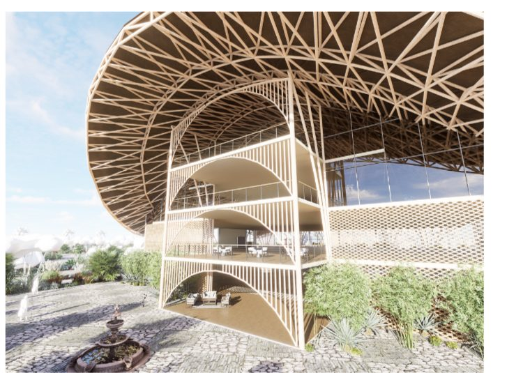
Cultural center — interior atrium
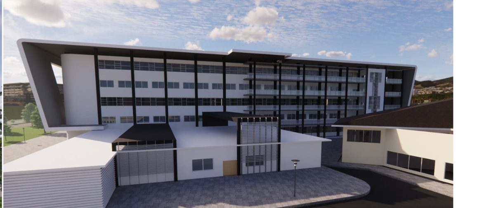
Hospital wing — exterior
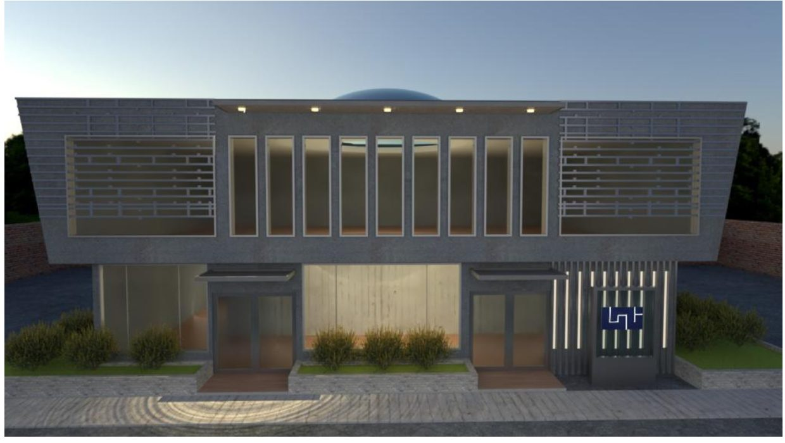
Public building — evening facade
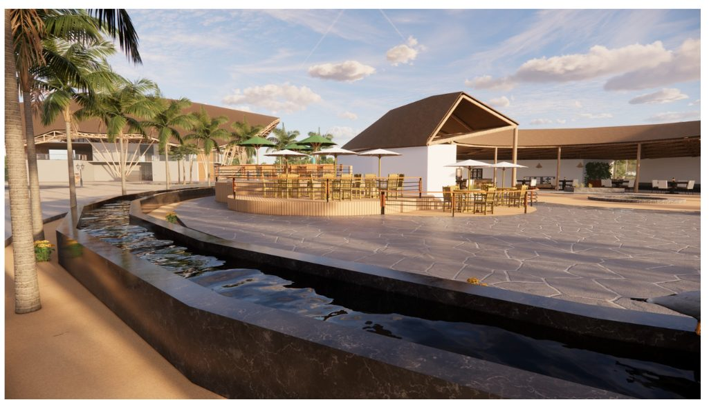
Coastal plaza — waterfront dining
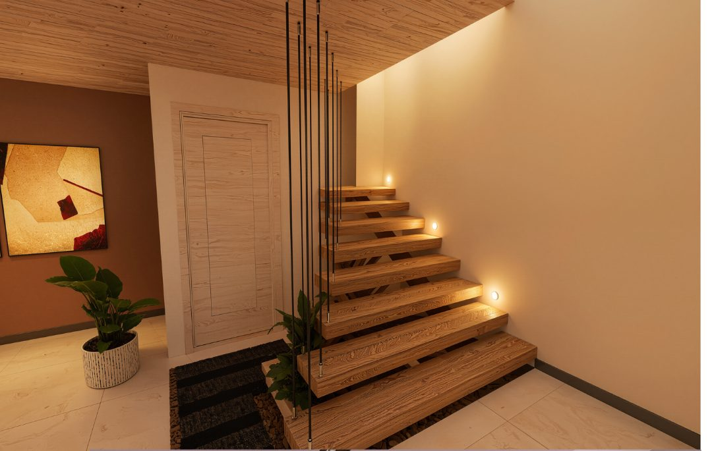
Floating stair — entry hall
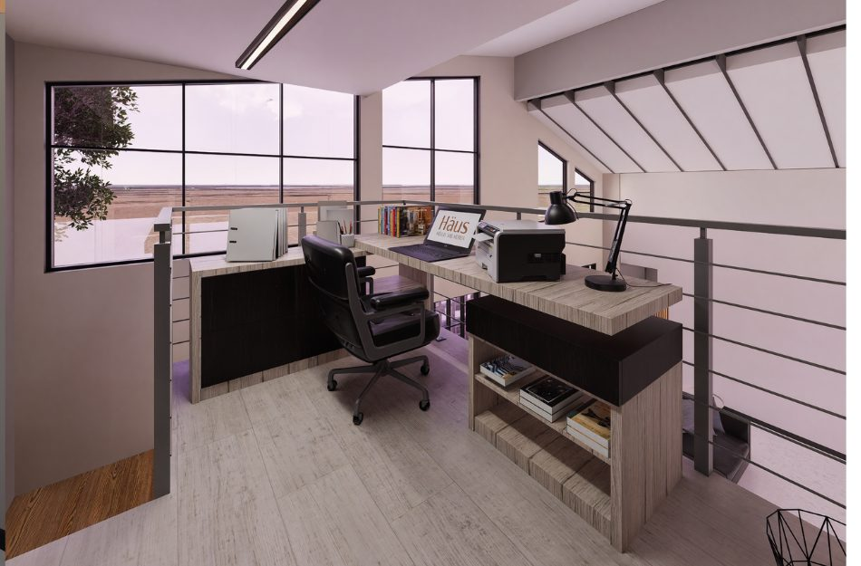
Loft office — mezzanine workspace
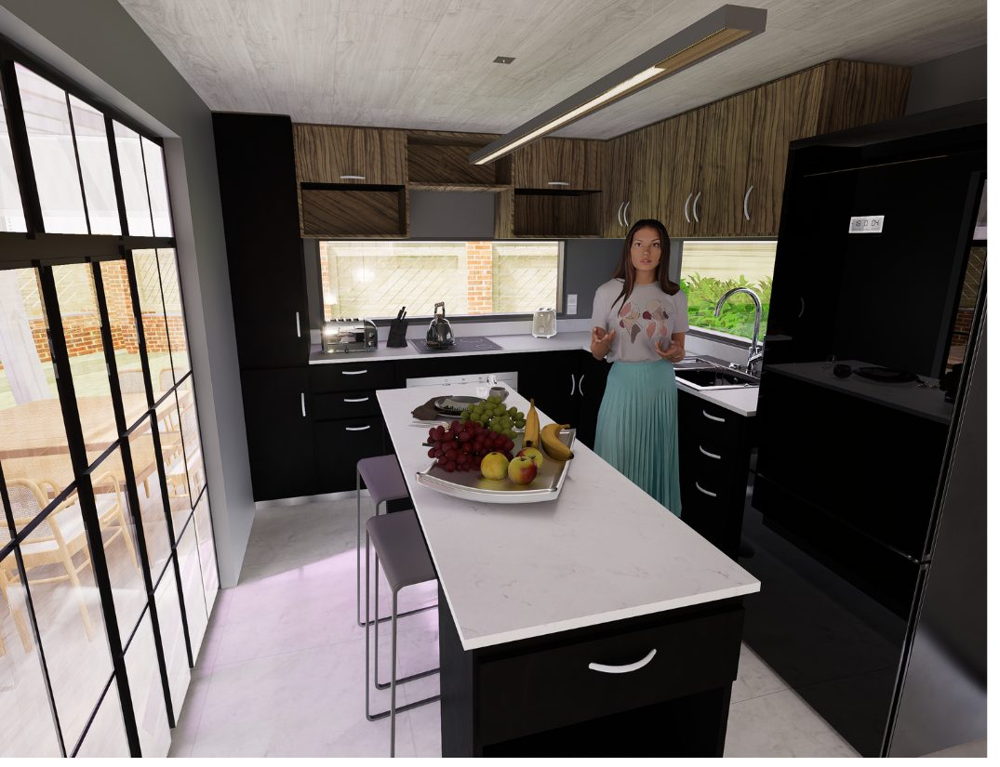
Residential kitchen interior
Construction Documents
Architectural and structural drawings — plans, elevations & shop details
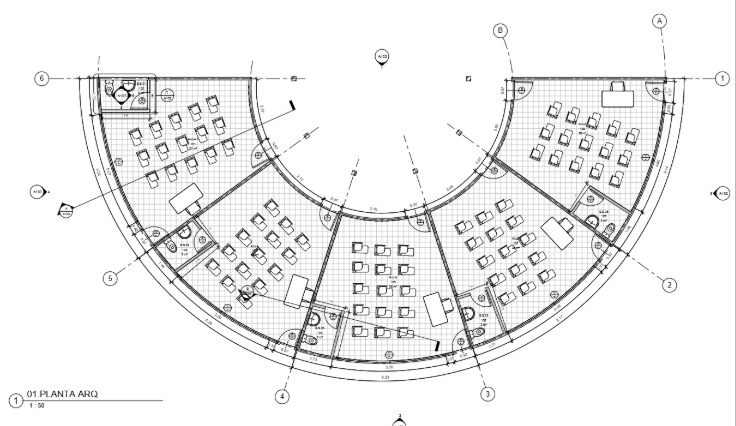
Auditorium — architectural floor plan
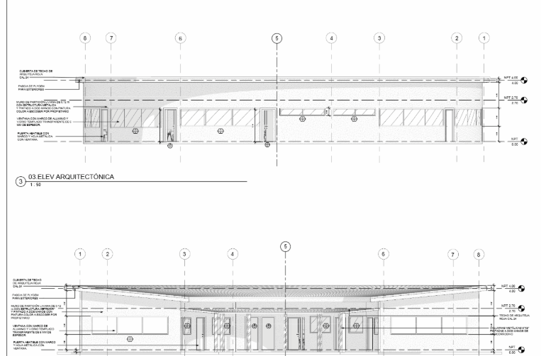
Architectural elevations
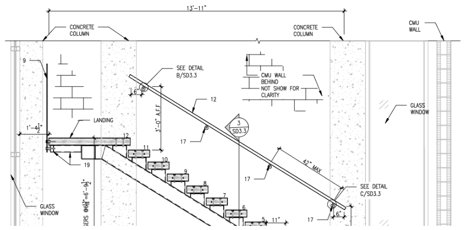
Steel stair — structural shop drawing
Concept Studies & Renders
Sketches, massing models, and architectural visualizations
Courtyard house — concept sketch
Circular lake house — render
Lake pavilion — aerial concept
Poolside house — massing study
Glass pavilion — render study
Cliff house — concept (monochrome)
Lake house — night isometric
Courtyard wall — color study
Tropical bar — palapa render
Tropical residences — landscape render
Apartment — sectional axonometric
Circular pavilion — study model
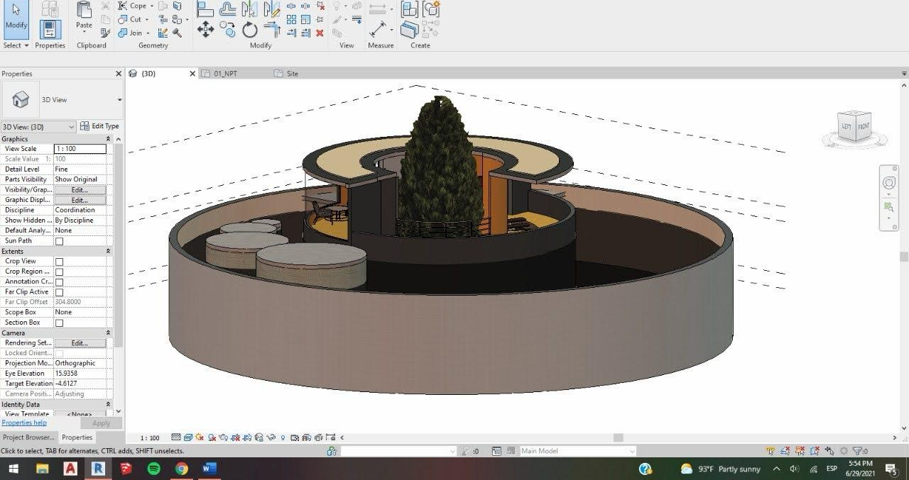
Circular pavilion — Revit 3D model
Concrete bathroom — interior render
Urban Visualization Studies
City-scale massing, segmentation passes, and lighting renders
City street — massing (clay)
City street — segmentation pass
City street — night render
City street — daytime render
Construction & Infrastructure
Box culverts, foundations, earthworks and survey control on active sites